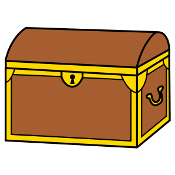
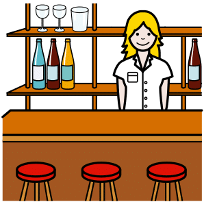
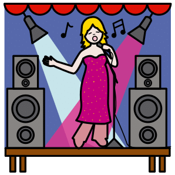
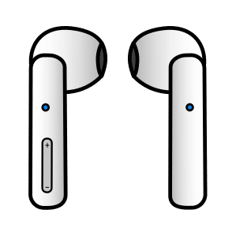
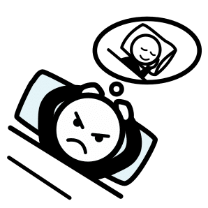

Mission : sauver les oreilles de Camille
Mission : sauver les oreilles de Camille

Code du coffreChaque bonne réponse ouvre un cadenas et donne un chiffre du code du coffre. Quand je coche une réponse, le chiffre est son numéro. Quand j'écris un mot, le chiffre est le nombre de lettres du mot. Tu peux utiliser ton cours. Quand les 8 chiffres sont trouvés, ouvre le coffre en bas de la page.




Camille, 24 ans, est serveuse dans une salle de concert. Les soirs de concert, son exposition au bruit, mesurée sur sa journée de travail de 8 heures, est de 92 dB(A). Son employeur lui a donné des bouchons d'oreilles, mais elle les enlève pour entendre les clients. Après le service, elle rentre chez elle en écoutant de la musique avec ses écouteurs, au volume maximal. Depuis lundi, elle entend des sifflements dans les oreilles et elle dort mal.
Tape les 8 chiffres du code, dans l'ordre des cadenas.